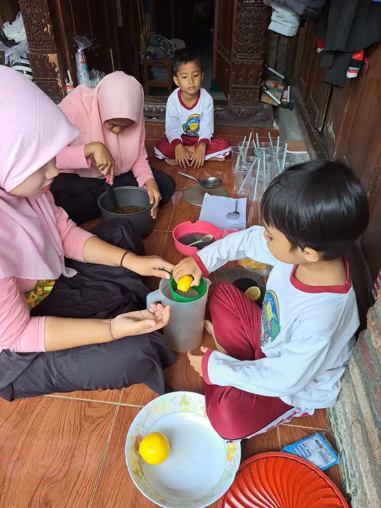
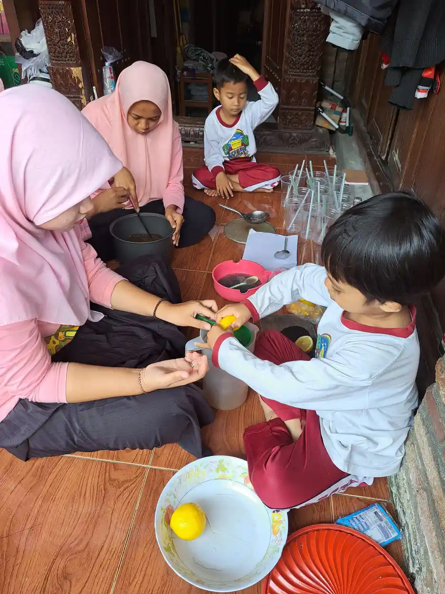

Floor time terapi, atau lebih dikenal dengan nama resmi DIR/Floortime, adalah metode terapi perkembangan yang dikembangkan oleh psikiater anak Dr. Stanley Greenspan dan Dr. Serena Wieder pada tahun 1980-an. Metode ini menggunakan pendekatan unik yaitu bermain di lantai bersama anak sebagai cara untuk membangun hubungan emosional, mendorong komunikasi, dan mendukung perkembangan anak secara menyeluruh.
Berbeda dengan pendekatan terapi perilaku yang lebih terstruktur seperti terapi ABA, DIR Floortime berfokus pada mengikuti minat anak sebagai pintu masuk untuk membangun interaksi. Ide dasarnya sederhana namun mendalam: ketika Anda duduk di lantai bersama anak, memasuki dunianya, dan mengikuti apa yang menarik perhatiannya, Anda menciptakan fondasi emosional yang kuat untuk seluruh aspek perkembangan.
Di YUKA (Yayasan Ukhuwah Kaffah Amanatullah), prinsip-prinsip floor time terapi diintegrasikan dalam pendekatan pendampingan kami untuk anak berkebutuhan khusus di Sekolah Inklusi Taruna Imani. Kami percaya bahwa setiap anak, termasuk anak dengan autisme, memiliki kapasitas untuk tumbuh ketika diberikan hubungan yang hangat dan stimulasi yang tepat.
Daftar Isi
- Pengertian DIR/Floortime
- Prinsip Dasar Floor Time Terapi
- 6 Tahapan Perkembangan Emosional Fungsional
- Cara Melakukan Floor Time Terapi
- Perbedaan Floor Time dengan Terapi ABA
- Manfaat Floor Time Terapi untuk Anak Autis
- Bukti Ilmiah Efektivitas DIR/Floortime
- Tips Orang Tua Melakukan Floortime di Rumah
- FAQ Seputar Floor Time Terapi
Pengertian DIR/Floortime
Floor time terapi secara resmi dikenal sebagai DIR/Floortime. DIR adalah singkatan dari tiga komponen utama dalam model ini:
- D - Developmental (Perkembangan): Memahami di mana posisi anak dalam tahapan perkembangan emosional fungsional. Setiap anak berada pada level yang berbeda, dan terapi dimulai dari level dimana anak berada saat ini, bukan dari harapan dimana seharusnya anak berada.
- I - Individual-difference (Perbedaan Individual): Mengakui bahwa setiap anak memiliki profil sensorik dan motorik yang unik. Ada anak yang hipersensitif terhadap suara, ada yang hiposensitif terhadap sentuhan. Terapi harus disesuaikan dengan profil unik setiap anak.
- R - Relationship-based (Berbasis Hubungan): Menekankan bahwa perkembangan terjadi dalam konteks hubungan emosional yang hangat. Hubungan antara anak dengan orang tua atau terapis menjadi "mesin penggerak" seluruh proses perkembangan.
Kata "Floortime" sendiri merujuk pada praktik di mana orang dewasa secara literal duduk di lantai bersama anak, berada pada level yang sama, dan terlibat dalam aktivitas bermain yang dipimpin oleh minat anak. Dr. Greenspan memilih istilah ini karena mengandung pesan penting: orang dewasa perlu "turun" ke level anak, baik secara fisik maupun emosional, untuk bisa benar-benar terhubung.
DIR/Floortime vs Floortime
Penting untuk membedakan: DIR adalah keseluruhan model/kerangka berpikir yang komprehensif, sementara Floortime adalah teknik atau strategi utama yang digunakan dalam model DIR. Dalam praktiknya, kedua istilah sering digunakan secara bergantian, namun DIR mencakup lebih dari sekadar sesi bermain di lantai, termasuk analisis profil sensorik anak dan kolaborasi multidisiplin.
Prinsip Dasar Floor Time Terapi
Untuk memahami dan menerapkan metode floor time dengan efektif, penting untuk menguasai prinsip-prinsip dasarnya. Prinsip-prinsip ini membedakan Floortime dari terapi lainnya dan menjadi panduan dalam setiap sesi interaksi.
1. Follow the Child's Lead (Ikuti Inisiatif Anak)
Prinsip paling fundamental dalam floor time terapi adalah mengikuti minat dan inisiatif anak, bukan memaksakan agenda orang dewasa. Jika anak tertarik membolak-balik halaman buku, jangan langsung mengarahkannya untuk membaca. Sebaliknya, ikuti minatnya, bergabung dalam aktivitas membolak-balik halaman, dan secara perlahan perluas interaksi dari sana.
Prinsip ini didasarkan pada pemahaman bahwa anak belajar paling efektif ketika mereka secara emosional terlibat (emotionally engaged) dalam aktivitas. Minat alami anak adalah "jembatan emas" menuju keterlibatan emosional ini.
2. Challenge the Child (Tantang Anak Secara Bertahap)
Setelah berhasil masuk ke dunia anak dan membangun koneksi, langkah selanjutnya adalah memberikan tantangan yang sesuai untuk mendorong perkembangan. Tantangan ini harus cukup menantang untuk memacu pertumbuhan, namun tidak terlalu sulit hingga membuat anak frustrasi. Misalnya, jika anak suka memutar-mutar roda mobil, Anda bisa secara playful "menghalangi" roda dengan jari Anda, memunculkan reaksi komunikatif dari anak.
3. Expand the Circle of Communication (Perluas Lingkaran Komunikasi)
Konsep "lingkaran komunikasi" (circle of communication) adalah salah satu kontribusi paling penting Dr. Greenspan. Satu lingkaran komunikasi terdiri dari: anak memulai sesuatu (membuka lingkaran), orang dewasa merespons secara bermakna, dan anak merespons balik (menutup lingkaran). Tujuan terapi floortime anak autis adalah meningkatkan jumlah dan kompleksitas lingkaran komunikasi ini secara bertahap.
4. Engage All Senses (Libatkan Semua Indera)
Setiap anak memiliki profil sensorik yang unik. Beberapa anak lebih responsif terhadap input visual, yang lain terhadap input auditori atau taktil. Floor time terapi mendorong penggunaan berbagai modalitas sensorik dalam interaksi untuk menemukan jalur komunikasi yang paling efektif bagi setiap anak.
5. Create a Warm, Joyful Atmosphere (Ciptakan Suasana Hangat dan Penuh Kegembiraan)
Emosi positif adalah katalis utama pembelajaran dalam DIR Floortime. Ketika anak merasa aman, dicintai, dan gembira, otaknya dalam kondisi optimal untuk belajar. Interaksi yang penuh tekanan atau terlalu menuntut justru akan menghambat perkembangan. Dr. Greenspan menyebutnya sebagai "affect signals", yaitu sinyal emosional yang menjadi fondasi perkembangan kognitif.

6 Tahapan Perkembangan Emosional Fungsional
Dr. Greenspan mengidentifikasi 6 tahapan perkembangan emosional fungsional (Functional Emotional Developmental Capacities/FEDC) yang menjadi kerangka kerja DIR Floortime. Setiap tahapan harus dikuasai secara berurutan karena menjadi fondasi bagi tahapan berikutnya.
Tahap 1: Regulasi dan Minat terhadap Dunia (Self-Regulation and Interest in the World)
Tahap paling dasar ini mencakup kemampuan anak untuk tetap tenang, sadar, dan menunjukkan minat terhadap lingkungan sekitar. Anak yang kesulitan di tahap ini mungkin menunjukkan tantrum berlebihan, penarikan diri ekstrem, atau ketidakmampuan untuk memperhatikan lingkungan. Tujuan floor time terapi di tahap ini adalah membantu anak menemukan keseimbangan sensorik dan emosional sehingga bisa "tersedia" untuk berinteraksi.
Tahap 2: Keintiman dan Keterlibatan (Intimacy and Engagement)
Setelah anak mampu meregulasi diri, tahap berikutnya adalah membangun keintiman emosional dengan orang lain. Ini ditandai dengan kemampuan anak untuk menunjukkan kesenangan saat bersama orang tertentu, mencari kedekatan fisik, dan menunjukkan preferensi terhadap pengasuh utama. Banyak anak autis mengalami kesulitan di tahap ini karena tantangan dalam memproses sinyal sosial.
Tahap 3: Komunikasi Dua Arah (Two-Way Communication)
Pada tahap ini, anak mulai mampu terlibat dalam interaksi timbal balik yang sederhana: memberikan isyarat dan merespons isyarat dari orang lain. Ini bisa berupa pertukaran senyuman, pemberian dan penerimaan mainan, atau interaksi bermain sederhana. Tahap ini merupakan landasan kritis untuk perkembangan bahasa dan komunikasi yang lebih kompleks.
Tahap 4: Komunikasi Kompleks dan Pemecahan Masalah Sosial (Complex Communication and Social Problem-Solving)
Anak mulai mampu merangkai banyak lingkaran komunikasi menjadi interaksi yang berkelanjutan dan kompleks. Mereka bisa menunjukkan keinginan, membawa orang dewasa ke objek yang diinginkan, menggunakan gestur dan kata-kata untuk berkomunikasi, dan memecahkan masalah sosial sederhana. Anak yang menguasai tahap ini mampu melakukan 30-50 lingkaran komunikasi secara berkesinambungan.
Tahap 5: Ide-Ide Emosional (Emotional Ideas)
Pada tahap ini, anak mulai mampu menggunakan simbol dan ide dalam permainan dan komunikasi. Mereka bisa bermain pura-pura (misalnya berpura-pura memberi makan boneka), menggunakan kata-kata untuk mengekspresikan perasaan dan keinginan, dan mulai memahami konsep abstrak sederhana. Ini menandai transisi dari komunikasi nonverbal ke komunikasi simbolis.
Tahap 6: Pemikiran Logis dan Emosional (Emotional Thinking)
Tahap tertinggi dalam model dasar DIR, di mana anak mampu menghubungkan ide-ide secara logis, memahami sebab-akibat emosional, dan berpikir secara reflektif. Mereka bisa menjawab pertanyaan "mengapa" dan "bagaimana", memahami perspektif orang lain, dan mengekspresikan rentang emosi yang luas. Anak yang mencapai tahap ini menunjukkan pemikiran yang fleksibel dan kreatif.
Tahapan Lanjut (7-9)
Dr. Greenspan juga mengidentifikasi tahapan lanjut (7: pemikiran multi-kausal, 8: area abu-abu dan derajat emosi, 9: perspektif internal yang reflektif) untuk anak yang lebih besar dan remaja. Tahapan ini mencakup pemikiran yang semakin abstrak, nuansa emosional, dan kemampuan introspeksi yang lebih dalam.
Cara Melakukan Floor Time Terapi
Berikut adalah panduan langkah demi langkah untuk melakukan floor time terapi, baik oleh terapis profesional maupun orang tua di rumah.
Persiapan Sesi
- Siapkan lingkungan yang aman dan nyaman: Pilih ruangan yang tenang, aman dari bahaya, dan memiliki cukup ruang untuk bermain di lantai. Kurangi gangguan seperti TV, gadget, atau mainan berlebihan.
- Siapkan mainan dan material: Sediakan berbagai mainan yang sesuai dengan minat anak, termasuk mainan sensorik, boneka, balok, bola, dan material seni. Jangan terlalu banyak; 5-7 pilihan sudah cukup.
- Pastikan Anda dalam kondisi siap: Matikan ponsel, singkirkan gangguan, dan pastikan Anda secara emosional "tersedia" untuk anak. Energi dan kehadiran Anda sangat memengaruhi kualitas sesi.
Langkah-Langkah Sesi Floor Time
Langkah 1: Observasi (2-3 menit)
Duduk di lantai dekat anak dan amati apa yang sedang dilakukannya. Perhatikan apa yang menarik minatnya, bagaimana dia menggunakan tubuhnya, dan ekspresi emosionalnya. Jangan langsung berinteraksi; cukup observasi dulu.
Langkah 2: Mendekati dan Bergabung (3-5 menit)
Secara perlahan bergabung dalam aktivitas anak tanpa mengambil alih. Jika anak sedang memainkan mobil-mobilan, ambil mobil lain dan ikuti apa yang dia lakukan. Tunjukkan bahwa Anda tertarik pada apa yang sedang dia kerjakan.
Langkah 3: Membangun Lingkaran Komunikasi (10-15 menit)
Ini adalah inti dari metode floor time. Mulailah membangun interaksi timbal balik. Tambahkan elemen baru yang sedikit berbeda, buat ekspresi wajah dan suara yang menarik, dan tunggu respons anak. Setiap kali anak merespons, Anda sedang menutup satu lingkaran komunikasi. Targetnya: terus perluas jumlah dan kompleksitas lingkaran komunikasi.
Langkah 4: Memberikan Tantangan Playful (5-10 menit)
Secara perlahan, perkenalkan tantangan yang sesuai dengan level perkembangan anak. Misalnya, "sembunyikan" mainan favoritnya di balik bantal dan tunggu reaksinya. Atau pura-pura "rusak" sesuatu yang dia bangun dan lihat bagaimana dia memecahkan masalah. Tantangan harus disampaikan dengan cara yang playful dan tidak mengancam.
Langkah 5: Penutupan (2-3 menit)
Akhiri sesi dengan lembut. Berikan transisi yang jelas, misalnya: "Seru sekali bermain tadi! Sebentar lagi kita selesai ya." Hindari mengakhiri sesi secara tiba-tiba karena bisa menimbulkan kecemasan pada anak.

Perbedaan Floor Time dengan Terapi ABA
Salah satu pertanyaan paling umum dari orang tua adalah: apa perbedaan antara floor time terapi dan terapi ABA (Applied Behavior Analysis)? Kedua pendekatan ini memiliki filosofi yang berbeda namun keduanya memiliki bukti ilmiah dan bisa saling melengkapi.
Perbandingan Utama
Filosofi Dasar:
- Floor Time/DIR: Perkembangan terjadi melalui hubungan emosional dan bermain. Emosi adalah motor penggerak kognisi.
- ABA: Perilaku adalah sesuatu yang bisa dipelajari, diukur, dan dimodifikasi melalui penguatan positif dan konsekuensi.
Arah Interaksi:
- Floor Time/DIR: Child-led (mengikuti inisiatif anak). Terapis/orang tua masuk ke dunia anak.
- ABA: Therapist-led (dipimpin terapis). Terapis mengarahkan aktivitas sesuai target terapi.
Fokus Utama:
- Floor Time/DIR: Perkembangan emosional, hubungan sosial, dan komunikasi. Fokus pada "mengapa" anak berperilaku tertentu.
- ABA: Perilaku spesifik yang terukur, keterampilan akademik, dan kemandirian. Fokus pada "apa" yang anak lakukan.
Pengukuran:
- Floor Time/DIR: Kualitatif dan kuantitatif. Mengukur jumlah lingkaran komunikasi, level perkembangan emosional, dan kualitas interaksi.
- ABA: Kuantitatif dan terstruktur. Mengukur frekuensi perilaku target, persentase keberhasilan, dan durasi tugas.
Setting:
- Floor Time/DIR: Bisa dilakukan di mana saja, terutama di lingkungan alami anak (rumah, taman, dll). Sangat cocok untuk diterapkan orang tua.
- ABA: Biasanya di setting terstruktur (klinik, ruang terapi), meskipun ABA modern juga menerapkan natural environment teaching.
Apakah Harus Memilih Salah Satu?
Tidak. Banyak praktisi dan orang tua yang mengombinasikan kedua pendekatan ini dengan hasil yang sangat baik. Misalnya, sesi ABA terstruktur di pagi hari untuk mengajarkan keterampilan spesifik, dan sesi floor time terapi di sore hari untuk membangun hubungan emosional dan mendorong inisiatif anak. Kuncinya adalah memahami kekuatan masing-masing pendekatan dan menyesuaikannya dengan kebutuhan anak.
"Tidak ada satu pendekatan tunggal yang cocok untuk semua anak. Yang terpenting adalah memahami profil unik anak Anda dan memilih atau mengombinasikan pendekatan yang paling sesuai. Floor time dan ABA bukan musuh, melainkan alat yang berbeda dalam kotak peralatan yang sama.", Pendekatan YUKA
Manfaat Floor Time Terapi untuk Anak Autis
Terapi floortime anak autis memberikan berbagai manfaat yang mencakup aspek emosional, sosial, komunikasi, dan kognitif. Berikut adalah manfaat-manfaat utama yang telah didokumentasikan baik dalam penelitian maupun praktik klinis.
Manfaat Emosional
- Ikatan emosional yang lebih kuat: Floor time memperkuat attachment (kelekatan) antara anak dan orang tua, yang menjadi fondasi keamanan emosional anak.
- Regulasi emosi yang lebih baik: Anak belajar mengenali dan mengelola emosi melalui interaksi yang aman dan suportif.
- Peningkatan kepercayaan diri: Karena interaksi mengikuti minat anak, anak merasa dihargai dan kompeten, meningkatkan self-esteem.
- Pengurangan kecemasan: Suasana bermain yang hangat dan tidak menghakimi membantu mengurangi kecemasan yang sering dialami anak autis.
Manfaat Komunikasi dan Sosial
- Peningkatan inisiatif komunikasi: Anak yang terbiasa dengan Floortime menunjukkan peningkatan dalam memulai interaksi sosial.
- Perkembangan bahasa: Lingkaran komunikasi yang berulang membangun fondasi untuk perkembangan bahasa ekspresif dan reseptif.
- Pemahaman sosial: Melalui interaksi bermain, anak belajar memahami perspektif orang lain, giliran, dan aturan sosial dasar.
- Kemampuan bermain yang lebih kaya: Anak mengembangkan kemampuan bermain yang lebih imajinatif dan kreatif.
Manfaat Kognitif
- Pemikiran yang lebih fleksibel: Floor time mendorong anak untuk berpikir kreatif dan menemukan solusi alternatif.
- Pemecahan masalah: Tantangan playful dalam sesi Floortime membangun kemampuan problem-solving.
- Generalisasi keterampilan: Karena dilakukan dalam konteks alami, keterampilan yang dipelajari lebih mudah ditransfer ke situasi nyata.
Bukti Ilmiah Efektivitas DIR/Floortime
Efektivitas DIR Floortime telah didukung oleh berbagai penelitian ilmiah, meskipun basis buktinya memang lebih kecil dibanding terapi ABA yang telah diteliti lebih lama.
- Pajareya & Nopmaneejumruslers (2011): Studi randomized controlled trial di Thailand menunjukkan bahwa anak autis yang menerima program Floortime berbasis rumah selama 3 bulan menunjukkan peningkatan signifikan dalam perkembangan emosional fungsional dibanding kelompok kontrol.
- Solomon et al. (2014): Studi PLAY Project menunjukkan bahwa program Floortime yang disampaikan melalui orang tua menghasilkan peningkatan signifikan dalam interaksi sosial dan bahasa pada anak autis usia 2-5 tahun.
- Casenhiser et al. (2013): Penelitian di Kanada membandingkan DIR/Floortime dengan intervensi komunitas standar dan menemukan bahwa kelompok Floortime menunjukkan peningkatan lebih besar dalam komunikasi sosial.
- Pendekatan DIR/Floortime: Berbagai laporan praktik klinis menunjukkan bahwa pendekatan DIR/Floortime dapat membantu kemajuan dalam hubungan, komunikasi, dan kemampuan berpikir pada anak dengan gangguan perkembangan, meskipun hasilnya bervariasi tergantung intensitas intervensi dan kondisi anak.
Interdisciplinary Council on Development and Learning (ICDL), organisasi yang didirikan oleh Dr. Greenspan, terus melakukan penelitian dan menyediakan pelatihan sertifikasi untuk profesional yang ingin menerapkan metode floor time.
Tips Orang Tua Melakukan Floortime di Rumah
Salah satu keunggulan terbesar floor time terapi adalah bisa diterapkan oleh orang tua di rumah tanpa peralatan khusus yang mahal. Berikut tips praktis untuk memulai.
- Mulai dari 20 menit per hari: Anda tidak perlu langsung melakukan sesi panjang. Mulai dari 20 menit bermain di lantai bersama anak, dan tingkatkan secara bertahap. Targetnya 6-10 sesi pendek sepanjang hari.
- Matikan semua distraksi: Saat sesi Floortime, matikan TV, letakkan ponsel, dan pastikan tidak ada gangguan. Kehadiran penuh Anda adalah "hadiah" terbesar untuk anak.
- Ikuti, jangan pimpin: Tahan keinginan untuk mengarahkan atau mengajar. Ikuti apa yang anak lakukan. Jika dia melempar bola, lempar bola juga. Jika dia menyusun balok, susun balok di sebelahnya.
- Gunakan ekspresi yang berlebihan: Anak autis sering kesulitan membaca ekspresi wajah yang halus. Gunakan ekspresi yang lebih besar dari biasanya: mata terbelalak saat kagum, suara tinggi saat excited, wajah sedih yang dramatis.
- Tunggu dan berikan waktu: Jangan terburu-buru mengisi keheningan. Berikan anak waktu untuk memproses dan merespons. Hitungan 10 detik seringkali terasa sangat lama bagi orang dewasa, tapi itulah waktu yang dibutuhkan anak untuk merumuskan respons.
- Fokus pada proses, bukan hasil: Jangan khawatir apakah anak "belajar" sesuatu yang spesifik. Fokus pada kualitas interaksi dan koneksi emosional. Pembelajaran akan mengikuti secara alami.
- Catat dan refleksikan: Setelah sesi, catat singkat apa yang terjadi: berapa lingkaran komunikasi yang terjadi, ekspresi emosional apa yang muncul, apa yang berhasil dan apa yang perlu diperbaiki.
- Jangan menyerah: Beberapa anak membutuhkan waktu lebih lama untuk mulai merespons. Konsistensi adalah kunci. Jika anak terus menghindari interaksi, cari jalan masuk yang berbeda, mungkin melalui modalitas sensorik yang berbeda.

Pengalaman YUKA: Menggabungkan Berbagai Pendekatan
Di Sekolah Inklusi Taruna Imani YUKA, kami tidak menganut satu pendekatan terapi secara eksklusif. Prinsip-prinsip floor time terapi kami integrasikan dengan pendekatan lain seperti ABA, sensori integrasi, dan terapi wicara. Misalnya, saat kegiatan cooking class, guru-guru kami menerapkan prinsip "follow the child's lead" dengan membiarkan anak memilih bahan yang ingin mereka olah, sambil secara perlahan memperkenalkan konsep urutan, kerja sama, dan komunikasi. Pendekatan holistik ini terbukti memberikan hasil yang komprehensif bagi perkembangan anak-anak kami.
FAQ Seputar Floor Time Terapi
1. Apa itu floor time terapi (DIR/Floortime)?
Floor time terapi atau DIR/Floortime adalah metode terapi perkembangan yang dikembangkan oleh Dr. Stanley Greenspan. Metode ini menggunakan bermain di lantai sebagai media untuk membangun hubungan emosional dan mendukung perkembangan anak, khususnya anak autis dan anak berkebutuhan khusus lainnya.
2. Apa perbedaan floor time terapi dengan terapi ABA?
Perbedaan utama: floor time terapi mengikuti inisiatif anak (child-led), fokus pada hubungan emosional, dan menggunakan bermain sebagai media utama. Terapi ABA lebih terstruktur (therapist-led), fokus pada perilaku terukur, dan menggunakan sistem penguatan. Keduanya bisa saling melengkapi.
3. Berapa usia ideal untuk memulai floor time terapi?
Floor time terapi bisa dimulai sejak bayi. Namun, paling efektif dimulai pada usia 2-5 tahun selama periode golden age. Untuk anak lebih besar atau remaja, prinsip Floortime tetap bisa diterapkan dengan modifikasi sesuai usia. Baca juga tentang pentingnya intervensi dini.
4. Apakah orang tua bisa melakukan floor time terapi sendiri?
Ya, salah satu keunggulan metode floor time adalah bisa dilakukan orang tua di rumah. Keterlibatan orang tua sangat dianjurkan karena memperkuat ikatan emosional. Namun, sebaiknya mendapat bimbingan terapis terlatih untuk memahami teknik dasarnya.
5. Berapa lama sesi floor time terapi berlangsung?
Satu sesi idealnya 20-30 menit. Direkomendasikan 6-10 sesi per hari yang tersebar alami sepanjang hari, totalnya sekitar 2-5 jam. Sesi bisa dilakukan secara fleksibel saat bermain, mandi, makan, atau aktivitas rutin lainnya.
6. Apakah floor time terapi cocok untuk semua anak autis?
DIR Floortime bisa bermanfaat untuk sebagian besar anak autis, terutama yang memiliki tantangan dalam hubungan sosial dan komunikasi. Namun, beberapa anak mungkin lebih responsif terhadap pendekatan lain, atau membutuhkan kombinasi beberapa pendekatan. Konsultasikan dengan profesional untuk menentukan pendekatan yang paling sesuai.
7. Di mana saya bisa belajar floor time terapi di Yogyakarta?
Di Yogyakarta, Anda bisa menghubungi YUKA yang mengintegrasikan prinsip-prinsip floor time terapi dalam program pendampingan di Sekolah Inklusi Taruna Imani. Hubungi kami di +62 812-2991-2332. Untuk sertifikasi formal DIR/Floortime, Anda bisa mengikuti pelatihan dari ICDL (Interdisciplinary Council on Development and Learning).
Artikel Terkait
Sumber Resmi & Referensi Authoritative
Konten artikel ini diperkuat dengan referensi dari lembaga resmi pemerintah dan organisasi kesehatan internasional:
- Kemenkes Yankes: Sensori Integrasi pada Perkembangan Anak yankes.kemkes.go.id
- Kemenkes Yankes: Apa Itu ADHD yankes.kemkes.go.id
- WHO Fact Sheet: Autism Spectrum Disorders who.int
- UU No. 8 Tahun 2016 tentang Penyandang Disabilitas peraturan.bpk.go.id
- Kemenkes Ayo Sehat: Kumpulan Link Penting untuk Anak Disabilitas ayosehat.kemkes.go.id
Disclaimer Medis & Pendidikan: Artikel ini bersifat edukasi umum dan bukan pengganti konsultasi profesional. Untuk diagnosis, asesmen, atau penanganan anak berkebutuhan khusus, silakan konsultasikan langsung dengan dokter anak, psikiater anak, psikolog perkembangan, terapis okupasi, atau tenaga ahli pendidikan khusus yang berlisensi. YUKA Indonesia mendukung pendekatan multidisiplin dan tidak menggantikan peran tenaga medis maupun terapis profesional.